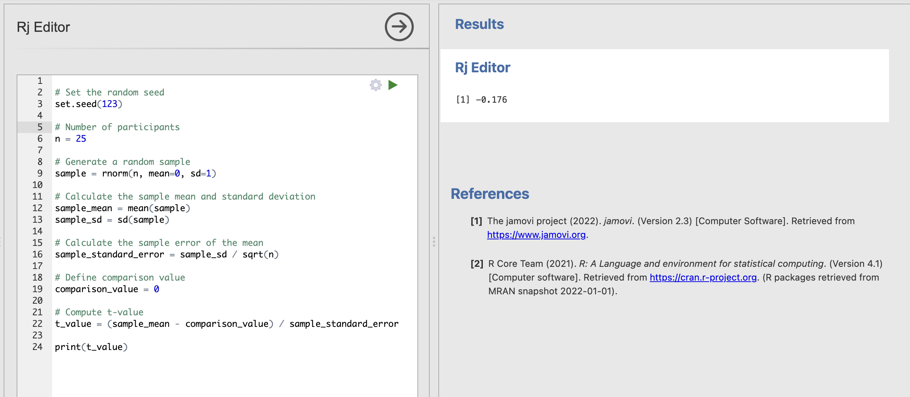
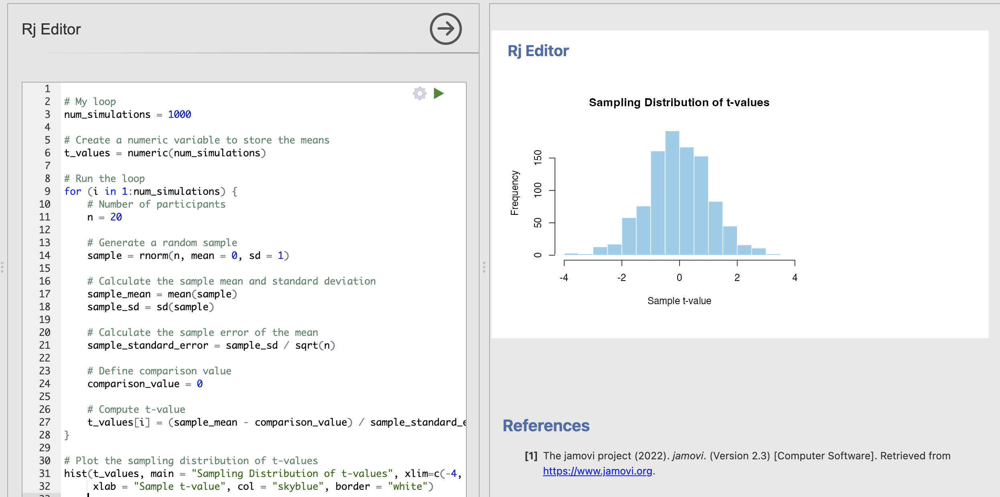
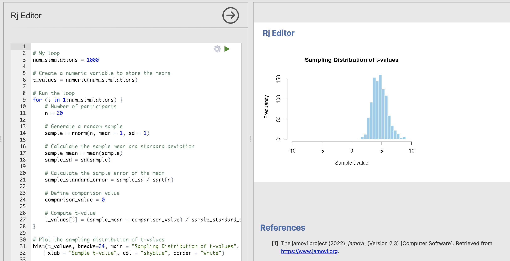
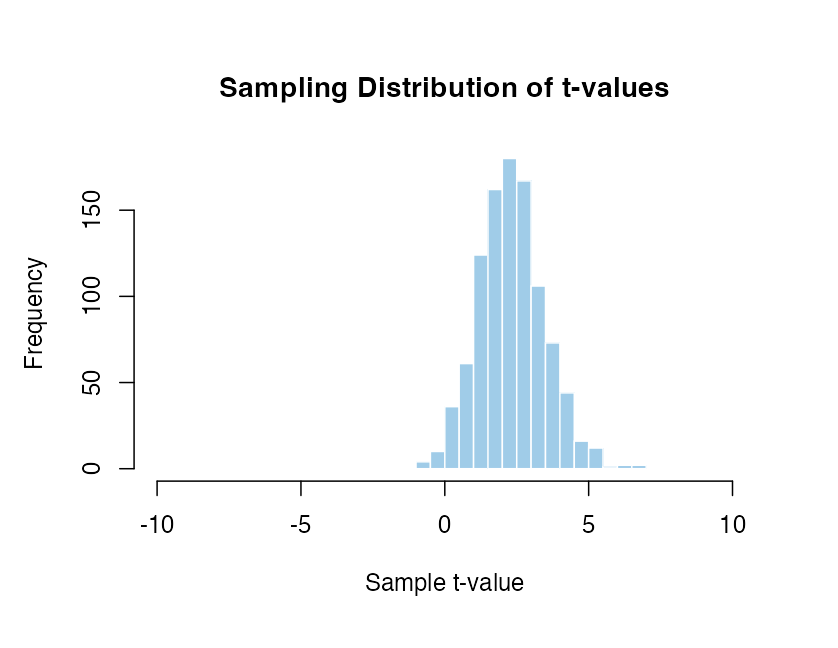
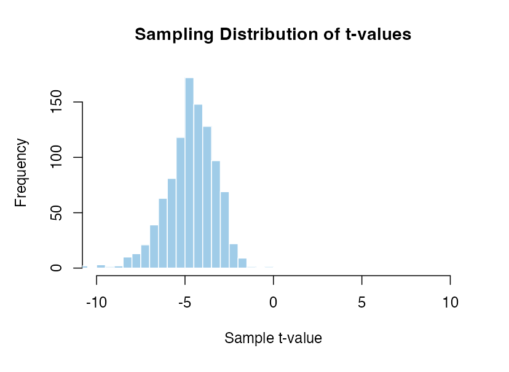
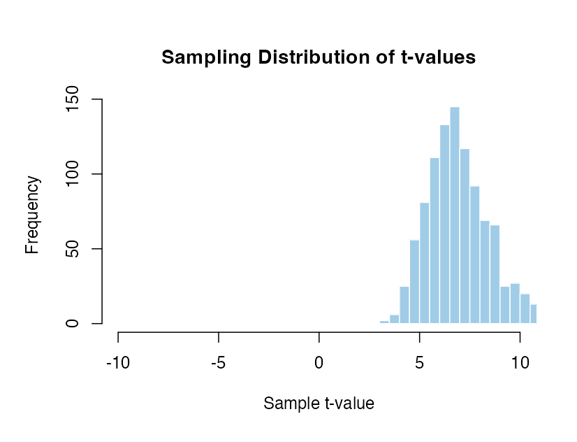

Week 10 : Simulating Sampling Distributions for t-values
The sampling distribution is central to how we can move from t-values to p-values - yet it is one of the trickier parts of this course. The lectures and pre-lecture materials frequently deal with computer simulations to show the properties of the tests we’re using, so this week you will write your own simulation to help understand the sampling distribution!
| Quantitative Methods | |
|---|---|
| Sampling Distributions | |
| t-values | |
| p-values |
| Data Skills | |
|---|---|
| Computing a one sample t-test in R | |
| Simulating data in R | |
| Writing loops in R |
| Open Science | |
|---|---|
| Creating shareable code to demonstrate a statistical concept |
1. The Dataset
TLDR: There is no data to download! we’re going to make the data ourselves.
The dataset this week is very simple - we’re going to create it ourselves using R. At this point, we know a lot about the types of questions that we can ask with t-tests and we know a lot about the data processing around it. We can check our understanding of different aspects of these statistical tests by simulating data samples that have known properties (eg mean and standard deviation) and checking if the outcome of the t-test is what we would expect.
This way we can numerically validate the tests we’re running and take a look under the hood and see what sort of processes Jamovi and R are using to compute the tests for us.
There is a lot of code in this session - don’t be afraid to ask for help from your tutors!
2. The Challenge
Today, we’ll first introduce some concepts and functions in R to simulate a data sample and compute our own one sample t-test. With that in hand, we will set up code to run thousands of tests in one go to help us to better understand sampling distributions.
3. Code for a one sample t-test
The first thing we’ll need is to compute a t value for a one sample t-test given a dataset. We can work from this definition you’ll remember from the lectures.
\[ t = \frac{\text{The sample mean} - \text{Comparison Value}}{\text{The standard error of the mean}} \]
and
\[ \text{The standard error of the mean} = \frac{\text{The sample standard deviation}}{\sqrt{n}} \]
Let’s think about what we’ll need to do to compute our t-test. Reading through the definitions, we’ll need some basic arithmatic (+, - and /) need to use the following R functions that we have worked with in previous weeks.
| Function | Definition |
|---|---|
mean() |
Compute the average of the numbers in a data variable |
sd() |
Compute the standard deviation of the numbers in a data variable |
sqrt() |
Compute the square root of a number |
With these components, we can compute the t-value for
Match the components of the one sample t-test to the R code that computes them. We can assume that our data is in a variable named sample and the number of data points is in a variable named n. The comparison value that we want to compare our mean to is in a variable named comparison_value.
| Assumption | Definition |
|---|---|
sample_mean = |
|
sample_standard_deviation = |
|
sample_standard_error = |
|
t_value = |
Carefully compare the options to the equations for a t-test and R function definitions above.
Now we have our ingredients, let’s run a t-test!
Open Jamovi, install the Rj add-on and open a new Rj window before we go any further
Take this code template and copy it across to an Rj window. Can you complete the code to compute a one-sample t-test to quantify how different the mean of sample is from the comparison_value of zero.
Copy this code into your Rj window (you can overwrite the previous code if you like), and fill in the blanks indicated by __YOUR_CODE_HERE__ (you should delete __YOUR_CODE_HERE__ and replace it with your answer).
# Number of participants
n = 25
# Generate a random sample
sample = rnorm(n, mean=0, sd=1)
# Calculate the sample mean and standard deviation
sample_mean = __YOUR_CODE_HERE__
sample_sd = __YOUR_CODE_HERE__
# Calculate the sample error of the mean
sample_standard_error = __YOUR_CODE_HERE__
# Define comparison value
comparison_value = 0
# Compute t-value
t_value = __YOUR_CODE_HERE__
print(t_value)All the answers are in previous sections, pay particular attention to the code examples in the previous ‘Check your understanding’ exercise.
Chat with one of your tutors if you get stuck.
The final code should look like this
# Number of participants
n = 25
# Generate a random sample
sample = rnorm(n, mean=0, sd=1)
# Calculate the sample mean and standard deviation
sample_mean = mean(sample)
sample_sd = sd(sample)
# Calculate the sample error of the mean
sample_standard_error = sample_sd / sqrt(n)
# Define comparison value
comparison_value = 0
# Compute t-value
t_value = (sample_mean - comparison_value) / sample_standard_error
print(t_value)Try running the code to make sure that it prints out a t-value. If you get some red text, it means something has gone wrong. Check your answers and chat with one of the tutors.
So, now we have some working code to compute our own t-values. This is going to be very useful in this session.
We have checked that the code runs, but it would be good to make sure that we’re all actually getting the same answers from the code. This is difficult at the moment as our random number generator will be producing different numbers every time (as it should!). This is normally a good thing but in a teaching setting it can make things difficult.
We can solve this issue by setting a “Random Seed” in our code. A random seed is a starting point for generating a sequence of random numbers. Think of it as the initial value that sets the stage for randomness. When you set a random seed, you ensure that the sequence of random numbers generated can be generated the same way each time. This is really critical for Reproducibility and Consistency when checking code..
In R, you can set a random seed using the set.seed() function with a number that defines the ‘initial conditions’ for the random numbers that we will generate. For example, we could use
set.seed(123)To tell R to generate random numbers using a specific set of initial conditions. We’ll get the same sequence of numbers each time we generate a data sample. This means that if we all add the same random seed to the code, we should get the same t-value every time.
Let’s try adding the random seed to the code.

We should all get the value -0.176 as the answer. Now we can be certain that we’re all getting the right answers.
Adapt your code to compute the t-value for the following conditions. Use a random seed of 123 throughout.
A data sample of 100 participants with mean of zero and standard deviation of one with a comparison value of zero: t =
A data sample of 100 participants with mean of three and standard deviation of one with a comparison value of zero: t =
A data sample of 10 participants with mean of three and standard deviation of one with a comparison value of two: t =
A data sample of 10 participants with mean of three and standard deviation of three with a comparison value of two: t =
After completing the exercise, reset your code to the following conditions
n = 25rnorm(n, mean=0, sd=1)comparison_value = 0
4. Sampling distributions for one sample t-tests
Note that we’re simulating data with a mean of zero and using a comparison_value of zero as well. This is our Null Model - the t-values we get from this code are ones that might appear if there is no true effect in the data.
# My loop
num_simulations = 1000
# Create a numeric variable to store the means
t_values = numeric(num_simulations)
# Run the loop
for (i in 1:num_simulations) {
# Number of participants
n = 20
# Generate a random sample
sample = rnorm(n, mean = 0, sd = 1)
# Calculate the sample mean and standard deviation
sample_mean = mean(sample)
sample_sd = sd(sample)
# Calculate the sample error of the mean
sample_standard_error = sample_sd / sqrt(n)
# Define comparison value
comparison_value = 0
# Compute t-value
t_values[i] = (sample_mean - comparison_value) / sample_standard_error
}
# Plot the sampling distribution of t-values
hist(t_values, main = "Sampling Distribution of t-values", xlim=c(-4, 4),
xlab = "Sample t-value", col = "skyblue", border = "white")

After this exercise, you can now compute the null model for a one sample t-test yourself. With this code you can run an analysis to explore how likely it is to observe different t-values when we assume the null hypothesis is true.
Think about the following questions and tweak your code to find the answers.
In all of these analyses we are absolutely assuming that the null hypothesis of no difference is true. With this assumptions, our sampling distribution shows that we get more extreme t-values (around +/- 4) by chance when working with smaller data samples. By contrast for larger data samples these same values occur extremely rarely.
When data are perfectly normally distributed (parametric assumptions are met), Jamovi and R can compute these null distributions for us using a shortcut without simulating lots of data samples but the result is the same.
To conduct a hypothesis test from real data, we would compute the t-statistic as normal and can then compare the observed value to this sampling distribution that assumes no difference and has the same sample size. If the t-value we’ve observed from the real data would be extremely unlikely to have occured if the null is true, then we can reject that hypothesis.
5. The null model
6. Computing a p-value
7. Why do we test the null hypothesis?
Finally, let’s consider why we test against the null distribution of no effect. This is fairly straightforward from the code we have written so far.
We can absolutely compute a sampling distribution for a case where there is a real difference between the mean and the comparison value. For example, this code simulates data with a mean of 1 and compares that to a comparison value of 0. Note that the rnorm() function inputs have changed.
# My loop
num_simulations = 1000
# Create a numeric variable to store the means
t_values = numeric(num_simulations)
# Run the loop
for (i in 1:num_simulations) {
# Number of participants
n = 20
# Generate a random sample
sample = rnorm(n, mean = 1, sd = 1)
# Calculate the sample mean and standard deviation
sample_mean = mean(sample)
sample_sd = sd(sample)
# Calculate the sample error of the mean
sample_standard_error = sample_sd / sqrt(n)
# Define comparison value
comparison_value = 0
# Compute t-value
t_values[i] = (sample_mean - comparison_value) / sample_standard_error
}
# Plot the sampling distribution of t-values
hist(t_values, breaks=24, main = "Sampling Distribution of t-values", xlim=c(-10, 10),
xlab = "Sample t-value", col = "skyblue", border = "white")The result is a sampling distribution which is not centred around mean.

This distribution tells us that with 20 participants, a mean of 1 and a standard deviation of 1 - we are mostly likely to get a -value of 5 but that t-value could be as small as 2 or as large as 9 for extreme data samples.
This is very useful, but the issue that is we have had to assume what the real effect is. We get radically different sampling distributions if we change that effect around.
Mean of 0.5 and standard deviation of 1 with 20 participants compared to zero.

Mean of -1 and standard deviation of 1 with 20 participants compared to zero.

Mean of 1.5 and standard deviation of 1 with 20 participants compared to zero.

There are an infinite number of possible sampling distributions when there is a real effect! It isn’t possible to know which distribution we should be comparing with without making some massive assumptions about the exact size, variability and direction of effect that we expect to see. This simply isn’t possible in practice.
In contrast, the null case is very closely controlled and easier to work with. The interpretation is trickier but rejecting the null hypothesis is a tractable problem that we can do a good job of solving.